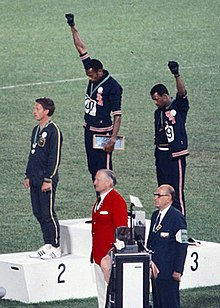
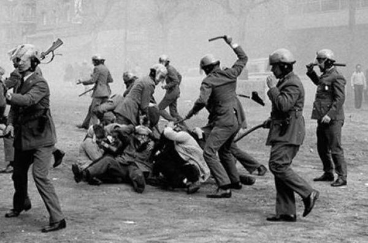

Mexican student protest repressed by mex. gov.; hundreds of peaceful protesters killed, 1000 arrested- similar to US anti-vietnam and civil rights protests
Civil rights - two black runners did black power fist during US nat. anthem. Banned from competing, making the US civil rights movement an international issue
US-Soviet boxing match, George foreman v. Ionas Chepulis. Foreman (US) wins and waves mini US flag to audience
Africa became promenant in running

